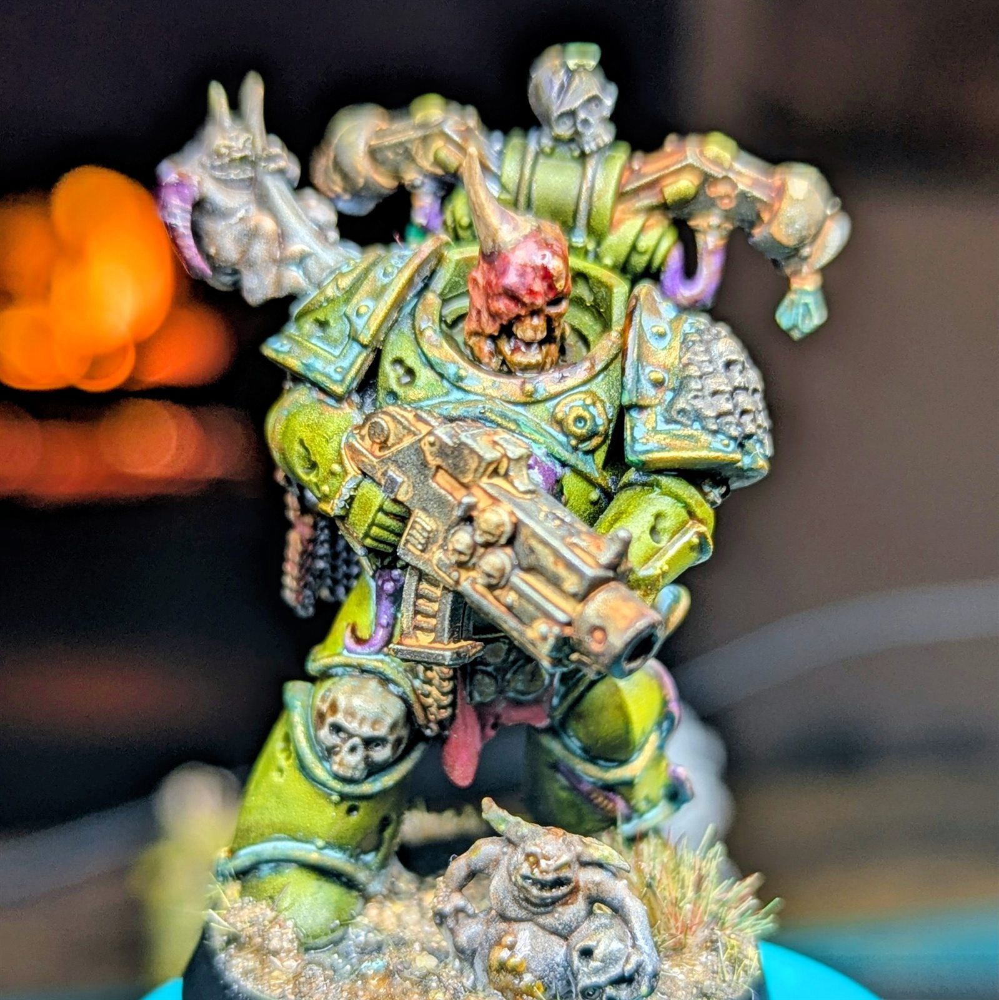
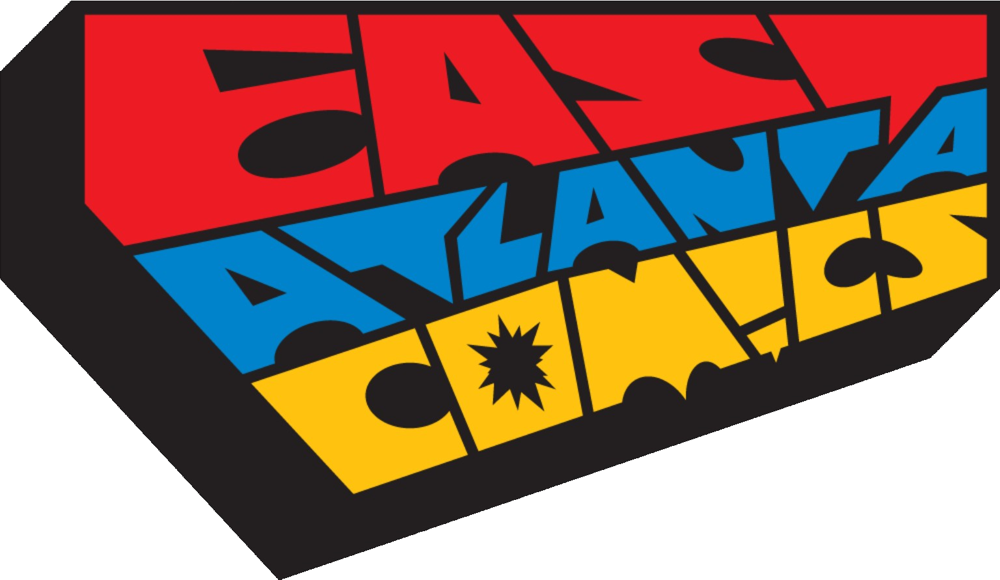

Checking the signal…
Transmission 001 East Atlanta Village
New players
Wanted
Meet at the bar.
Glory awaits.
Low-pressure miniature wargaming for brand-new recruits, longtime players, and the people ready to teach the next generation. Come share the hobby and find your table in East Atlanta Village.
- Materials provided
- No experience required
- All players welcome
Community signalATL // EAV
Learn together. Play together. Build the community.

View in galleryMinis // Death Guard
- 01JoystickMeet at the bar
- 02Roll outWalk together
- 03Dice CityGet equipped
- 04Join your gameYour table is ready
The real mission
Find a table.
Keep EAV connected.
Wasted Wargaming exists to support two spaces building a future in East Atlanta Village: Joystick Gamebar as it makes a new home in the neighborhood, and Dice City Games, the new tabletop project from East Atlanta Comics.
Third spaces (places that aren’t home or work, where people can return often enough to know and be known) are essential neighborhood infrastructure. They are also increasingly hard to find.
A tabletop game gives strangers a reason to sit down, share a problem, laugh, and become familiar faces. We love these games. We also believe in what happens around them: local friendships, stronger ties, and a neighborhood that feels a little less anonymous. That kind of belonging matters to both community life and public health.
The games are the invitation
Community is the mission
Keep third spaces alive
Incoming transmission
Mission briefings
Event details live here as soon as they’re confirmed. No mystery dates, surprise fees, or invented intel.
Status updates from our event file
Choose how you join
Three ways in.
One community.
These aren’t ranks you have to earn. Choose the path that fits what you want tonight, open its briefing, and return here whenever you want to switch.
01Learn
Recruit
Start from zero.
Curious about the hobby? We’ll supply the miniatures, explain the game, and pair you with someone patient. No purchase, preparation, or prior knowledge required.
02Play
Veteran
Find more good games.
Already know the hobby? Meet local players, try other systems, join friendly matchups, and help make every table relaxed and welcoming.
03Teach
Commander
Bring others with you.
Commanders are our volunteer teachers: friendly players who can guide a first game, support an event, and help the community grow.
Every Wednesday
Happy hour
to game night.
Recruits, veterans, and commanders all start together at Joystick. We make the introductions, sort out the tables, and head to Dice City as one group.
-
01
6:00 PM · Joystick
Happy hour
Meet the community, ask questions, and grab a themed drink. The first specialty is the Warp Storm, a grimdark spin on a dark-and-stormy-style drink made with Joystick’s house-made ginger beer.
-
02
At Joystick
Get connected
Pick up a Recruit, Veteran, or Commander badge so it’s easy to find the people who want to learn, play, or teach.
-
03
7:00 PM · EAV
Walk together
We leave Joystick at 7:00 PM and make the short walk to Dice City together. No one has to arrive at an unfamiliar table alone.
-
04
7:00–10:00 PM · Dice City
Find your table
Recruits join learning tables with commanders. Veterans connect for friendly 1v1 games. Play continues until Dice City closes at 10:00 PM.
Recruit · Learn
Your seat is ready.
We’ll assign you to a learning table with a commander. Printed rule sheets, loaner armies, dice, terrain, and guidance are provided.
Veteran · Play
Bring an army.
Come ready for a friendly pickup game. If you can, bring an extra loaner army. Coordinate a matchup ahead of time in the East Atlanta Comics / Dice City Discord.
Commander · Teach
Guide a first game.
Meet your recruits at Joystick, then help lead a welcoming learning table at Dice City. Patience matters more than perfect rules recall.
Dice City table fee$10 to playFree play is Sundays; Wasted Wargaming adds no fee.
What to buyNothing requiredNo purchase is necessary to take part.
Age policyAll agesWe meet at 6:00 PM and leave Joystick at 7:00 PM, well before its 21+ policy begins at 9:00 PM.
Built in EAV
Two local spaces.
One growing community.
With Joystick preparing a new East Atlanta Village location and the newly opened Dice City bringing more tabletop gaming to the neighborhood, this is the right moment to connect both communities.
Meet here first
Joystick Gamebar
Joystick is bringing its gamebar energy to a new East Atlanta Village location. It will be our relaxed starting point for drinks, introductions, and the beginning of the night.

Play here together
Dice City Games
The newly opened tabletop-gaming project of East Atlanta Comics, and where our miniatures, terrain, and new connections hit the table.
Declassified answers
Questions are part of the hobby.
If yours isn’t here, bring it with you. There is no entry exam.
Who belongs at the table?
Everyone who comes to play in good faith belongs here. We are building a low-pressure community where new and experienced players can ask questions, be themselves, and enjoy the hobby together. We especially want people who have felt left out of nerdy or gaming spaces to know there is a place for them here.
Gatekeeping, harassment, racism, sexism, homophobia, transphobia, and other behavior that pushes people out of the community are not welcome at our events. If someone feels unwelcome or unsafe, we want them to tell an organizer so we can address it. Our standard is simple: respect the people at the table and help make room for more.
We share Games Workshop's stated belief that Warhammer is for everyone. Read their community statement.
Do I need to know how to play?
No. The event is specifically built for people who have never played. We’ll explain what matters while you play.
Do I need to bring or paint miniatures?
Recruits do not need to bring anything. We provide printed rule sheets, loaner armies, dice, terrain, and instruction. Veterans looking for a pickup game should bring their army and, if possible, an extra loaner army.
Is this a tournament?
Our first events are relaxed learn-to-play gatherings, not tournaments. Friendly 1v1 league play is planned next, with true competitive tournaments intended for the future.
Can I come alone?
Absolutely. Meeting at Joystick first is designed to make arriving alone feel easy. We’ll introduce you to the group.
How much does it cost?
Dice City charges its normal $10 table fee on Wednesdays. Wasted Wargaming does not add another fee, and no purchase is required. Dice City offers free play on Sundays.
Is there an age requirement?
The event is all ages. Joystick becomes 21+ after 9:00 PM, but the Wasted Wargaming group leaves Joystick for Dice City at 7:00 PM.
Can experienced players attend?
Absolutely. Veterans can meet opponents, try new games, join friendly league play, or step into the commander role and teach. Beginner-friendly does not mean beginner-only.
What if the event fills up?
Tables at Dice City are always first come, first served. There are plenty of tables, so we’re unlikely to run out. Arriving with the group at 7:00 PM is the best way to claim a spot. You’re also welcome to join us for Happy Hour and observe the games for free; the $10 table fee only applies if you play.
Stay connected
Find your next table.
Learn-to-play nights, friendly matchups, league updates, and commander calls will all be shared here. Join the East Atlanta Comics / Dice City Discord now; our Meetup, Instagram, and contact links will appear as soon as they’re confirmed.